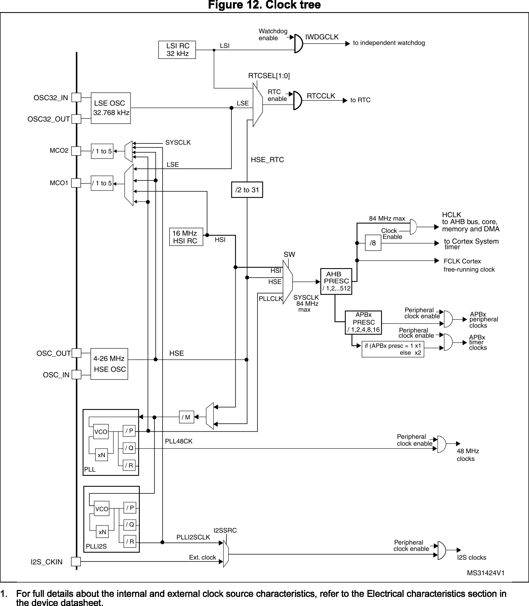
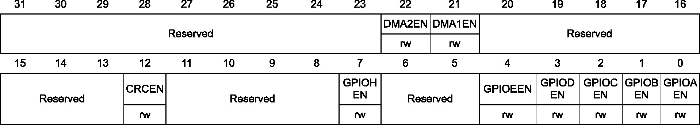
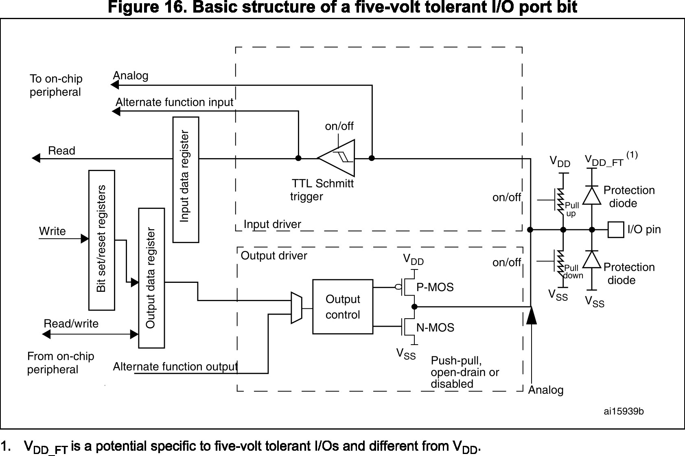
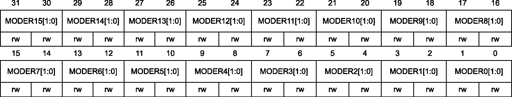
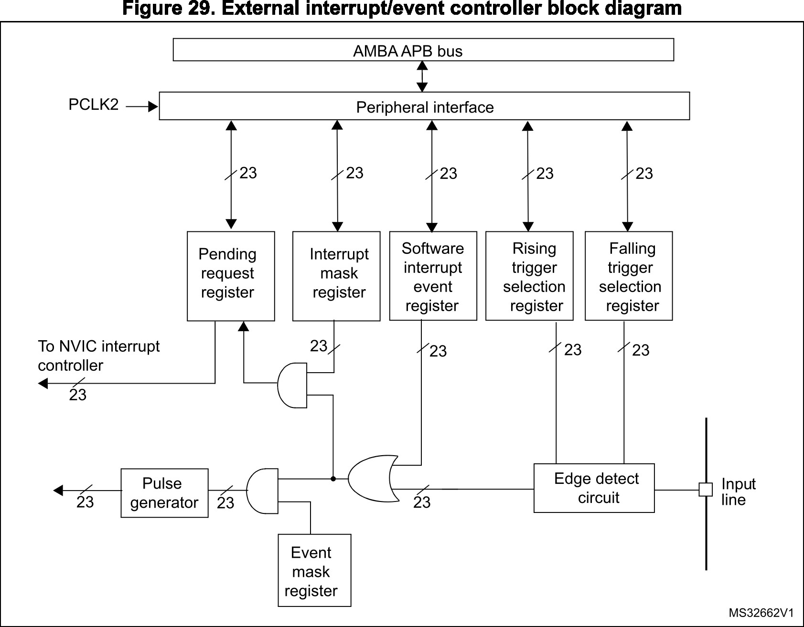
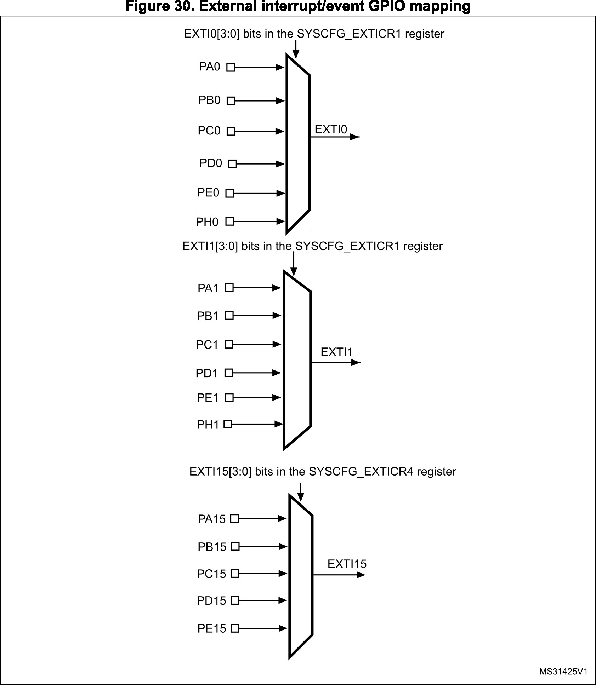
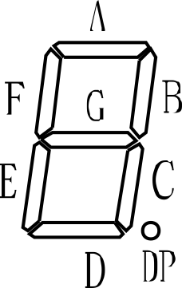
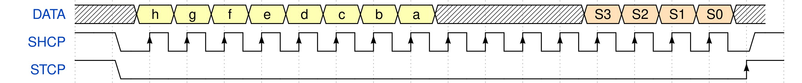

| Kompetence | Bitové operace, ovládání pinů, převod čísla na segmenty, časový multiplex |
|---|---|
| Periferie | GPIO, RCC, EXTI, SCB, jádro |
| Kostra kódu | 02_gpio-template.zip |
Na cvičeních pracujeme s vývojovým kitem Nucleo64, na kterém je mikrokontrolér STM32F401RET. Obsah cvičení tak bude specifický pro daný mikrokontrolér, avšak látka se dá zobecnit a postupy jsou aplikovatelné i pro jiné mikrokontroléry nebo mikroprocesory. Na cvičeních také budeme pracovat s rozšiřující deskou AMP-DK.
Při práci s embedded (vestavěné, malé, mikrokontrolérové) systémy je třeba používat různé manuály, které popisují jak čipy používat. Pro každé MCU existuje řada dokumentů, mezi které patří:
Dokumenty často mívají stovky, ne-li tisíce, stran, což není na škodu. Popis periferií jde často do hloubky a popisuje i známe principy a protokoly. Běžně tak stačí přečíst si část kapitoly o periferii, se kterou chceme pracovat, a podívat se na popis registrů. Typický postup práce je nejprve se podívat do RM a pak v DS najít příslušné piny a jejich nastavení. Pokud pracujeme ještě s externím čipem či součástkou (například posuvným registrem), podíváme se od jeho datasheetu abychom zjistili, jak s ním pracovat (tyto DS bývají naštěstí krátké).
Činnost mikrokontroléru je dána hlavním hodinovým signálem SYSCLK, který je odvozen od jednoho z dostupných zdrojů signálu.
Jak je SYSCLK generován a jak manipulovat s frekvencí se budeme zabývat na pozdějším cvičení.
V použitém MCU jsou k dispozici tyto zdroje hodinového signálu:
SYSCLK,
SYSCLK,
O zdroje hodin, distribuci a manipulaci hodinového signálu se stará periferie RCC. Distribuce hodin je znázorněna na obrázku figure 1.

Periferie jsou sdružené do sběrnic AHB1, AHB2, APB1 a APB2.
RCC obsahuje registry, které hodiny periferiím zapínají (RCC→xENR), které hodiny nechají zapnuté v režimu nízké spotřeby (RCC→xLPENR) a které provedou reset periferii (RCC→xRSTR).
Hodiny jsou od periferii oddělené hradlem AND, které hodiny propustí dál pouze tehdy, když je nastaven příslušný bit.
Například na obrázku figure 1.
Na obrázku figure 2 je uveden registr RCC→AHB1ENR, který zapíná hodiny periferií ze skupiny AHB1.
Hodiny většiny periferií bývají po restartu MCU vypnuté, aby se tak šetřilo energií a zapínalo se jen to, co je třeba.
Hodiny jsou třeba, aby s danou periferií šlo pracovat.
Dle manuálu je pro zapnutí hodin třeba nastavit bit (dát do jedničky, set) dané periferie.
Například pro zapnutí hodin GPIOA se v registru nastaví nultý bit.
RCC->AHB1ENR |= 1; // 0x00000001 // nebo RCC->AHB1ENR |= 1 << 0; // nebo RCC->AHB1ENR |= RCC_AHB1ENR_GPIOAEN;Operace
x |= y je zkrácený zápis pro x = x | y, kde | provede bitový součet (bit-wise OR).
Vypnutí hodin je provedeno analogicky vyčištením příslušného bitu (dát do nuly, clear).
RCC->AHB1ENR &= ~1; // 0xFFFFFFFE // nebo RCC->AHB1ENR &= ~(1 << 0); // nebo RCC->AHB1ENR &= ~RCC_AHB1ENR_GPIOAEN;Operace
x &= y je zkrácený zápis pro x = x & y, kde & provede bitový součin (bit-wise AND).
V druhém případě je použita kombinace &= a bitové inverze ~. Tomu se říká maskování, neboť schováme nezajímavé bity za “masku” (za jedničky, protože x & 1 = x) a vyčistíme jen ty bity, které chceme.
x | y/x & y a logický součet/součin x || y/x && y.
Rozdíl je zcela zásadní a častým zdrojem chyb.
Zatímco bitové operace jsou aplikovány na každý bit proměnných zvlášť, logické operace uvažují hodnotu proměnných (konkrétně, zda-li jsou pravda/nepravda, v C je pravda jakákoliv nenulová hodnota).
Například, pokud x = 0x3 = 0b11 a y = 0x8 = 0b1000, pak x | y = 0xB = 0b1011, zatímco x || y = 1, což je rozdílné.
GPIO periferie, či GPIO brána, zastřešuje funkci pinů MCU a propojuje interní periferie s okolními obvody. U STM32F4 může GPIO brána mít maximálně 16 pinů. STM32F4 má 6 bran (všechny na AHB1): GPIOA, GPIOB, GPIOC, GPIOD, GPIOE a GPIOH [STM32F4_DS] (kapitola 5, tabulka 10). Struktura pinu Každý pin může být nastaven jako vstupní, výstupní, alternativní funkce nebo analogový. Po restartu jsou všechny piny, až na nutné výjimky (napájení, debug), nastaveny jako vstupní. V tomto režimu jsou ve stavu vysoké impedance a neovlivňují cokoliv je k nim připojeno.

Chování pinu je dáno registry:
MODER výběr módu pinu, každý pin tu má vyhrazeny 2 bity, vstup 0, výstup 1, alternativní funkce 2, analog 3
AFRL a AFRH, výběr 1 z 16 alternativní funkcí pinu, jejich popis je v [STM32F4_DS], každý pin tu má 4 bity pro výběr funkce ($16=2^4$), při 16 pinech je tak třeba 64 bitů a proto máme dva 32bit registry,
PUPDR nastavení pull-up/pull-down odporů,
OTYPER výběr mezi typem výstupu (push-pull, otevřený kolektor),
OSPEEDR výběr rychlosti pinu, nastavujeme podle očekáváné maximální frekvence spínání,
ODR výstupní registr, hodnota na pinu je dána hodnotou příslušného bitu,
IDR vstupní registr, logická hodnota čtená na daném pinu,
BSRR pomocný registr pro atomické nastavení, zápisem do spodních 16ti bitů nastavíme příslušný bit v ODR (a tedy i pin na logickou 1), zápisem do horních 16ti bitů vyčistíme příslušný bit v ODR.

Například, nastavení pinu PA5 na výstup s otevřeným kolektorem (OC) se provede následovně.
RCC->AHB1ENR |= RCC_AHB1ENR_GPIOAEN; // Zapni hodiny GPIOA GPIOA->OTYPER |= GPIO_OTYPE_OT5; // Nastav pin na OC GPIOA->MODER &= ~(GPIO_MODER_MODE5_Msk); GPIOA->MODER |= 1 << GPIO_MODER_MODE5_Pos; // A az potom zmen jeho mod/rezim
MODER se okamžitě změní funkce pinu. Pokud například nastavíme režim pinu na AF a teprve pak budeme manipulovat s registrem AFRL nebo AFRH, mohou se na pinech objevit zákmity, které mohou zmást okolní obvody (například SPI komunikaci). Doporučujeme tak změnu módu provést až po nastavení zbylých registrů.
Přerušení (interrupt) je mechanismus, který umožní procesoru přerušit vykonávání aktuální kódu a reagovat na zdroj přerušení. V momentě kdy procesor detekuje přerušení dojde k:
Pseudokód tohoto algoritmu procesoru je níže.
while true if interrupt save_context(); isr(); restore_context(); end if process_instruction(); end while
Zdroje přerušení můžou být:
Počet různých přerušení je omezený (například maximálně 224) a procesorech ARM Cortex-M se o jejich správu stará část procesoru Nested Vector Interrupt Controller (NVIC). NVIC se také stará o priority přerušení a tím umožní stanovit, které přerušení má vyšší prioritu než jiné. V případě STM32F4 má NVIC celkem 52 maskovatelných kanálů (tzn. různých přerušení, které lze zapnout) a 16 úrovní přerušení (4 bity). Přerušení a jejich výchozí priority popisuje tabulka 38 [stm32f4_rm] (kapitola 10, strana 202).
Když nastane přerušení, NVIC zjistí jeho prioritu. Pokud je právě obsluhováno jiné přerušení, pak NVIC porovná jejich priority a pokud má nové přerušení vyšší prioritu, tak se zpracování přerušení s nižší prioritou pozastaví. V opačném případě se přerušení nastaví Pending bit a čeká se na dokončení přerušení s vyšší prioritou. Obslužná rutina se vybere na základě adresy v tabulce vektorů, která je umístěna na počátku programové paměti (viz. adresy v tabulce 38).
stm32f401xe_vectors.s).
Pro aktivování přerušení je třeba jej v NVIC povolit a definovat obslužnou funkci.
Abychom se vyhnuli okamžitému volání obslužné funkce (například po restartu), je vhodné před povolením vyčistit případný pending bit funkcí NVIC_ClearPendingIRQ().
Níže je příklad zapnutí přerušení pro Systémový časovač (SYSTICK).
#include "stm32f4xx.h" // Obsluha preruseni SysTick void SysTick_Handler(void) { } int main(void) { // kod NVIC_ClearPendingIRQ(SysTick_IRQn); NVIC_EnableIRQ(SysTick_IRQn); // vice kodu return 0; }
EXTI zastřešuje správu přerušení z GPIO pinů. Pomocí EXTI lze reagovat na náběžnou hranu, sestupnou hranu či oboje na kterémkoliv z dostupných pinů. EXTI má 23 kanálů, 16 pro piny, zbylých 7 pro RTC a další události.

Propojení EXTI a GPIO pinů je omezeno.
Každý ze 16 kanálů je možno připojit pouze k jednomu z pinů s daným číslem.
To znamená, že k EXTI kanálu 0 lze připojit jeden z {PA0, PB0, PC0,…}, k EXTI kanálu 1 zase jeden z {PA1, PB1, PC1, …} a tak dále.
V důsledku nelze sledovat přerušení najednou z PA0 a PB0.
Připojení GPIO pinu k EXTI kanálu je realizován multiplexorem.
Řídicí signály multiplexerů, které vyberou GPIO bránu, jsou dány obsahem registrů periferie systémové konfigurace (SYSCFG) SYSCFG→EXTICR1 až SYSCFG→EXTICR4(SYSCFG je třeba zapnout hodiny před použitím).
Schéma multiplexorů je na obrázku figure 6.

Nastavení typu sledované hrany se nachází v registrech EXTI→RTSR (Rising Trigger Selection Register) a EXTI→FTSR (Falling Trigger Selection Register).
Pokud chceme, aby EXTI kanál generoval přerušení, musíme jej povolit jak v NVIC, tak i v registru EXTI→IMR (Interrupt Mask Register).
V momentě kdy dojde ke sledované události, bude nastaven příslušný bit v Pending registru EXTI→PR.
Bit je hardwarem pouze nastavován a abychom po zpracování události mohli čekat na další, je třeba jej vyčistit.
Způsob vyčištění bitu se u každá periferie liší a postup je vždy uveden v popisu registru v referenčním manuálu.
V případě EXTI je bit vyčištěn zápisem jedničky, například:
EXTI->PR |= EXTI_PR_PR0;
Na rozšiřující desce je sedmisegmentový display o 4 číslicích (digitech).
Každý digit má 7 LEDek, označené písmeny A až G, a jednu LEDku, označenou jako H nebo DP, pro desetinnou tečku.

Tento konkrétní displej má LEDky v zapojení společné katody, která je uzemněná. Jednotlivé segmenty se tedy zapínají přivedením napětí na piny (logická jednička). LEDky potřebují dostatečný proud (například 10 mA) k tomu aby svítily. Procesor nedokáže poskytnout dost proudu pro všechny LEDky bez (trvalého) poškození. K jeho ochraně je na desce budič (buffer, driver), který jednak dokáže bez problému dodat dost proudu a zároveň provádí převod mezi 3,3 V logikou procesoru a 5 V.
K ovládání jednoho digitu je třeba 8 pinů, jeden pro každý segment. Pokud bychom chtěli nezávisle řídit každý digit, pak bychom potřebovali celkem 32 pinů! Tento přístup je dost plýtvavý a zbytečně bychom využili skoro každý dostupný pin mikrokontroléru. Proto se využívají posuvné registry (shift register) a expandéry (io expander), do kterých je možné “uložit” stav pinů a ten přenést po podstatně méně vodičích (například 3).
Tak je tomu i na naší rozšiřující desce, kde jsou 2 8bitové posuvné registry, jeden pro ovládání segmentů a jeden pro zapínání digitů. Cenou za tento přístup je ten, že nelze digity ovládat nezávisle. Toto však nevadí, když v jeden moment bude svítit vždy jeden digit a budeme mezi digity přepínat tak rychle, že se bude zdát, že svítí všechny najednou. Ovládání tedy rozdělíme tzv. časovým multiplexem (time multiplex).
Data do posuvného registru dostaneme pomocí vodičů DATA, SHCP (shift clock, posunutí dat) a STCP (store clock, uložení a zobrazení dat). Celou 16bitovou informaci, kde v horních 8 bitech (konkrétně 8.-11. bit) je výběr digitu a ve spodních 8mi je výběr segmentů, pak postupně “naposouváme” bit po bitu z procesoru do posuvného registru. Pořadí vysílání bitů je Most Significant Bit First (MSB), tedy nejvyšší bit je odeslán jako první. Struktura dat a časový diagram komunikace s posuvným registrem je na obrázku figure 8.
